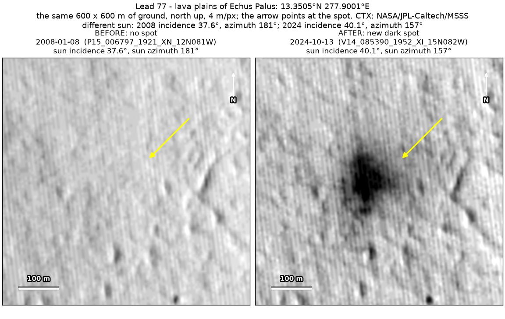
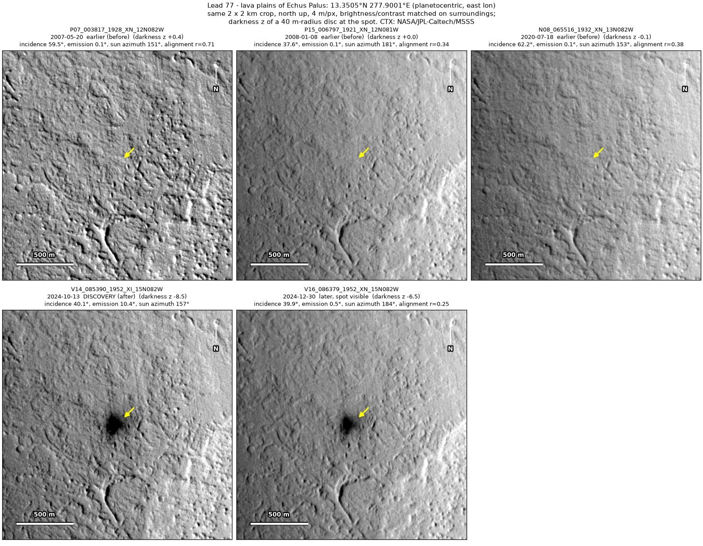
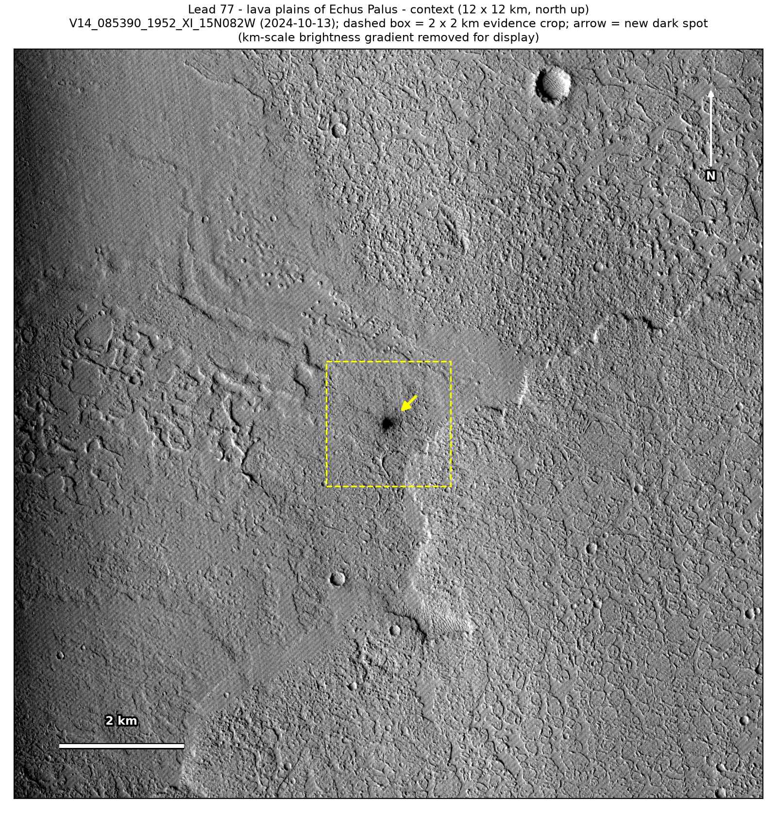
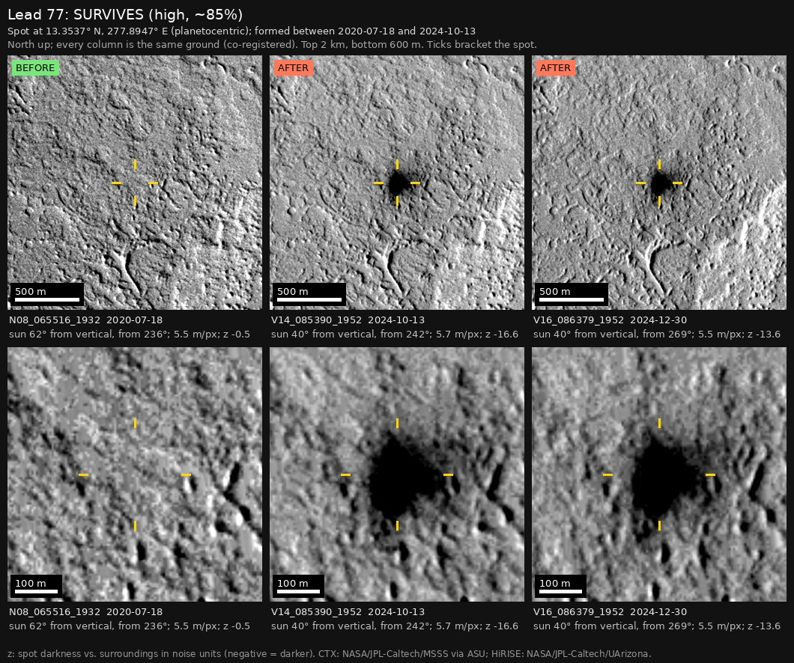

Professor of Mathematics
Paata Ivanisvili
Department of Mathematics, University of California, Irvine

← Possible new impact sites on Mars
Candidate 77: Lava plains of Echus Palus
Strong · roughly 85%

What changed. A dark spot about 120 to 140 m across, with a darker core about 60 m wide, appeared on ridged lava plains of Echus Palus, between July 2020 and October 2024, and is still there in December 2024, in two CTX images from two orbits.
Why it may be a new impact. Three earlier images, from 2007, 2008 and July 2020, show no spot there, while the nearby ridges are clear in them. The spot is round, sits on no landform and has a sharp darker core, with no source of dark sand nearby, and a new dark spot like this fits the blast zone of a small new crater.
- Location
- 13.350° N, 277.900° E (82.100° W)
- Absent
- 20 May 2007, 8 January 2008 and 18 July 2020
- Present
- 13 October 2024 and 30 December 2024
- Size
- Dark spot about 120 to 140 m across (134 × 162 m in the October 2024 image), with a darker core about 60 m wide
- Confidence
- Strong candidate: roughly 85% likely to be a new impact.
- Caveat
- Only two images show it, two and a half months apart, and the dark feature nearby used as a check is only weakly dark in the earlier images, far fainter than the spot. The spot could instead be a patch of the plain stripped of dust by wind, though it is round, sits on no landform and has a sharp darker core. It is most likely a separate event from a catalogued candidate impact site 27 km away, at which the nearest HiRISE image was aimed in April 2026. No image from the high-resolution HiRISE camera covers it; the nearest ends 22.7 km away. Like every candidate here, it is unconfirmed: see the caveat.


